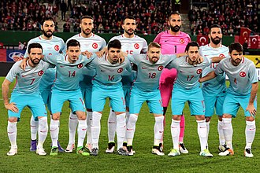
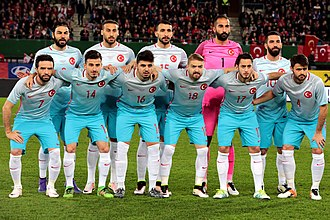

Seleção Turca na UEFA Eurocopa
Turquia chega como revelação na Euro 2024, com jogadores interessantes em seu plantel como Arda Guler e Calhanoglu. Com uma história pequena no torneio, vem para tentar vencer seu primeiro titulo.

Turquia chega como revelação na Euro 2024, com jogadores interessantes em seu plantel como Arda Guler e Calhanoglu. Com uma história pequena no torneio, vem para tentar vencer seu primeiro titulo.
